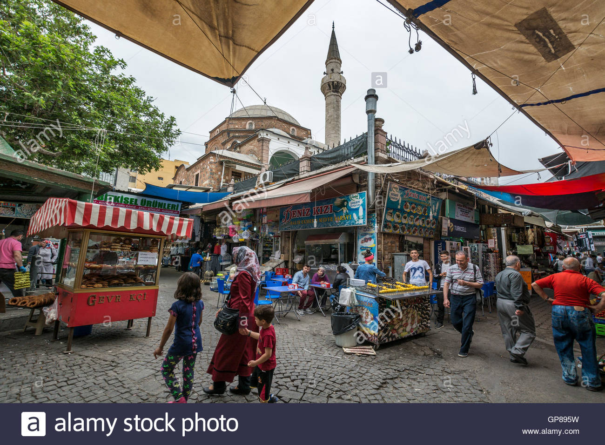
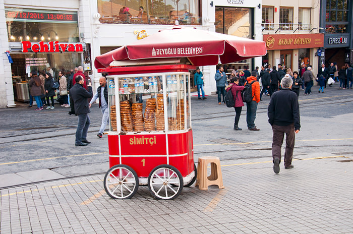
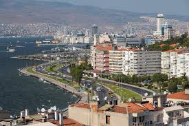

Izmir is a Turkish city located on the Aegean Sea. It is uniquely situated around water.
The Kemeraltı Bazaar (Kemeraltı Çarşısı in Turkish) is a popular place for residents to do a variety of shopping, from groceries to clothes to sitting down for Turkish classics like fried fish or kebab.
Simit is a classic twisted sesame seed-coated bread. Simit vendors are everywhere in the main parts of the city, and it's totally worth trying a very common Turkish food. Izmir has its own special variety of simit that is made with molasses called "gevrek," and when you are buying simit in Izmir, you are actually probably buying gevrek.
The kordon is the part of the city that wraps around the water. So much of the city is wrapped around the water that there are ferries that run across the water. It is very common to also walk or bike along the kordon because the view is incredible, especially when the weather is nice. You'll come across restaurants, grass, monuments, and even parks.
